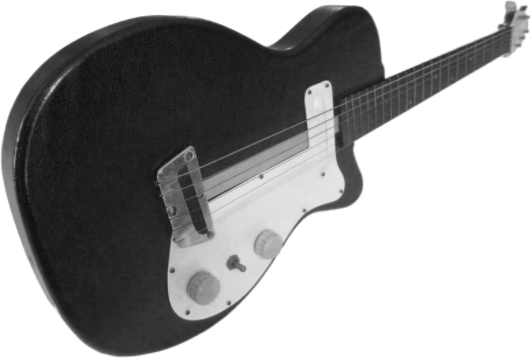
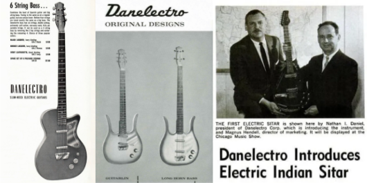
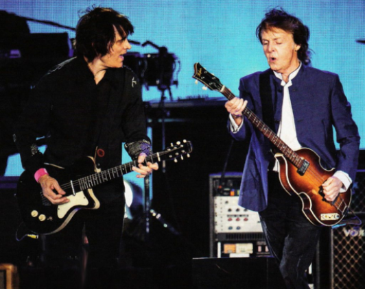

Follow


1947년 Nathan Daniel이라는 사람이 Danelectro로 알려지게 될 회사를 설립했습니다. Nathan은 Sears 백화점에 기타 앰프를 제조 및 공급하고 기타 앰프의 최대 공급업체가 되기 위해 Danelectro를 설립했습니다. 그의 앰프는 기타리스트에게 더 많은 사운드 컨트롤을 제공하는 트레몰로와 리버브를 최초로 실험했습니다.
Danelectro는 Sears와의 파트너십을 더욱 발전시켰습니다. 1954년, 회사는 최초의 일렉트릭 기타를 만들었습니다. 다른 브랜드와 달리 Nathan은 소비자에게 더 저렴한 기타를 만들고 싶었습니다. 그는 재료를 마조나이트로 변경하여 우리 기타에 독특한 사운드를 제공했습니다. 이것이 바로 지미 헨드릭스와 같은 많은 유명 기타리스트들이 그들의 시작을 하게 된 이유입니다.
1956년부터 1967년까지 Danelectro는 다른 회사에서는 생각할 수 없는 새로운 아이디어를 실험하기 시작했습니다. Danelectro는 최초의 6현 베이스 기타, 최초의 12현 일렉트릭 기타, 일렉트릭 시타르, 기타-만돌린 "Guitarlin" 하이브리드, 내장 앰프가 있는 기타 등의 혁신가였습니다.
1990년대부터 Danelectro 기타와 장비에 대한 뮤지션들의 새로운 관심이 생겼습니다. 사람들은 단순히 우리의 소리와 외모에 대한 향수를 불러일으키는 모습을 갈망합니다. 오늘날까지 전 세계의 많은 기타리스트와 다양한 장르의 기타리스트가 계속해서 우리 악기를 연주하고 있습니다. 75년이 지난 후에도 우리는 계속해서 품질에 전념하고 있습니다.
